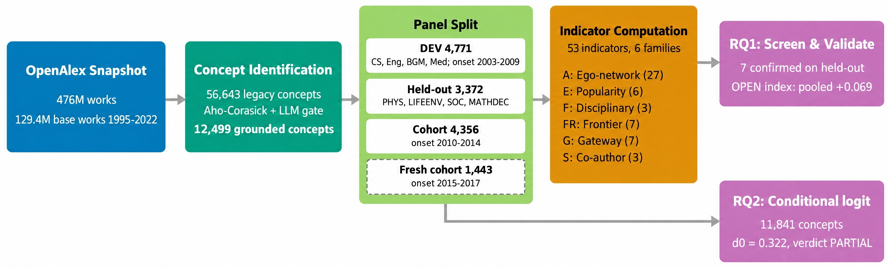

Which new concepts end up spreading across fields?
Some scientific concepts stay inside their home discipline for decades; others cross into many fields within a few years. Simple popularity already predicts much of that later spread. The question is whether the shape of a concept's first three years of topic co-occurrences adds anything beyond it.
It does, a little. Concepts whose early keeps picking up new partners from many topic communities later reach more fields. The paper summarises this with the , and the effect is measured as a with after removing the .
Pooled with over six . The association is small and has the same sign everywhere; it is a descriptive estimate, because all bodies except the 2015–17 cohort had their outcomes read in earlier analyses.
Does the association hold in every body of concepts, and how does it compare with what a shuffled outcome gives?
Rungs add controls: . keeps only the novelty and churn parts of OPEN. The grey band is the null baseline for each body: how large an estimate gets when the breadth outcome is shuffled 200 times. Data: evaluation 4, results/evidence_synthesis.json.
How it works: one concept, start to finish
The study grounds 12,499 concepts in the OpenAlex snapshot, measures 53 early indicators over the to t0+2, and compares each concept's later breadth with what popularity alone predicts. The stepper below follows one real matched pair through those stages using the values the run recorded.

What happens to one concept at each stage, and why does the stage exist?
Explore the evidence
The OPEN index was not chosen in the dark. It grew out of a screen of 53 indicators, and it was then checked concept by concept on a cohort that no earlier step had touched. Both are below.
Which early signals survive held-out testing?
The ten indicators ranked highest on DEV were tested once on held-out groups. Do they keep their sign in each group, or only in the pool?
Pooled values are Table 2 of the paper (paper.tex); per-body values are experiment 8, results/portability_table.csv, outcome O2r (m = 50). Bars start at zero; whiskers are 95% CIs.
What does OPEN change for a single concept?
On the fresh 2015–17 cohort, a model frozen on earlier concepts predicted each concept's breadth from B5 alone and from B5 plus OPENhome. Where does adding openness move the prediction, and does it move it the right way?
Each dot is one concept: OPENhome (x) against how far its observed breadth sits above or below the B5-only prediction (y). Click a dot, or use the list, to open it.
Data: experiment 10, full_method_out.json (all cohort concepts with an observed O2r, m = 50; of them have OPENhome). Counts, medians and the rank correlation are computed in the page from these rows. The rank correlation is a raw Spearman with the B5 residual, not the paper's partial Spearman (+0.091 at R2 on the same cohort).
Try it: where does a concept go next?
The second question of the paper is about routes. Each year, a concept that has not yet entered a field could enter any of the remaining ones. A scores every candidate field. The baseline uses home relatedness, field size, density of entered fields, own gateway centrality, RCA density and volume density. The method adds relatedness to the off-home fields that currently the concept, the .
If you only looked at the k fields each model ranks highest, how often would the field the concept actually entered be among them?
Each concept-year stratum lists all candidate fields with the within-stratum choice probability of both frozen DEV models (experiment 7, full_method_out.json, 252,922 held-out candidate rows). The build script recorded, for every stratum with an entry, the rank of the entered field under each model (ties counted against the model); the page sweeps k over those ranks.
Where it fails
The retained-frontier coefficient is large and positive, yet the pre-registered verdict is PARTIAL. The view below shows why: the result survives many rivals and breaks on two specific ones, the and a change of proximity measure.
Does d0 hold in every domain, and under every specification the paper tried?
Data: experiment 7, results/frontier_result.json. Intervals are 95% concept-bootstrap CIs where the file stores them; for the fixed-effects, RCA-event, primary-topic and proximity rows the page draws ±1.96 concept-clustered standard errors from the same file.
The pre-registered criteria
Dead ends and negative results
Which hypotheses were tested and did not survive?
| Hypothesis / candidate | Decisive test | Result |
|---|
What the paper does not show
Effect size. The association is modest, and OPENhome adds no forecasting gain over B5 on the fresh cohort (+0.002 [−0.003, +0.008]).
Measurement noise. Split-half reliability of OPENhome is 0.49. The temporal-excess variants have split-half reliability below 0.05, so static dispersion and temporal turnover cannot be told apart at about 10 home papers a year. Temporal turnover is untested, not refuted.
Coupling. About half of the OPENall signal is mechanical coupling between the ego network, which uses off-home papers, and the breadth outcome. OPENhome is free of this coupling but marginal.
Not causal. Early openness could reflect a concept's intrinsic generality, the diversity of the community around it, or the breadth of the problems it addresses. A within-concept closure test is null on DEV and opposite-signed on held-out fields (−0.079), so openness behaves as a between-concept trait.
Prior unsealing and vocabulary. Held-out outcomes were unsealed by two earlier experiments, so the screen's held-out results are robustness checks. The legacy concept vocabulary is survivor-selected; the vocabulary-free frame has 636 concepts and pre-unseal power of 0.47.
Routes. The retained-frontier effect is backbone-specific and cannot be separated from sustained volume; heterogeneity across domains is high (I2 = 0.92).